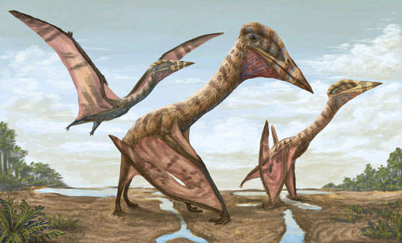

Giganotosaurio
Giganotosaurus carolinii,es la única especie conocida del género extinto Giganotosaurus de dinosaurio terópodo carcarodontosáurido, que vivió a mediados del periodo Cretácico hace aproximadamente entre 99,6 y 96 millones de años, en el Cenomaniense,1 en lo que hoy es Sudamérica..

Thanatosdrakon Amaru:
Thanatosdrakon (que significa 'dragón de la muerte'), es un género de pterosaurio quetzalcoatlinae de la Formación Plottier del Cretácico Superior (Coniaciense Superior-Santoniense Inferior) de la Cuenca Neuquina en el oeste de Argentina (cordillera de los Andes). El nombre del género se deriva de las palabras griegas thanatos (=muerte) y drakon (=dragón), mientras que el nombre específico es una palabra quechua que significa 'serpiente voladora' y se refiere a la deidad inca Amaru. La especie tipo y única es Thanatosdrakon amaru, conocida a partir de dos especímenes que consisten en varios huesos axiales y apendiculares bien conservados, incluido material no descrito previamente en azdárquidos gigantes (por ejemplo, notario completo, vértebras dorsosacras y vértebras caudales). Thanatosdrakon es uno de los miembros más antiguos conocidos de Quetzalcoatlinae.23 T. amaru vivió hace entre 90 y 86 millones de años.